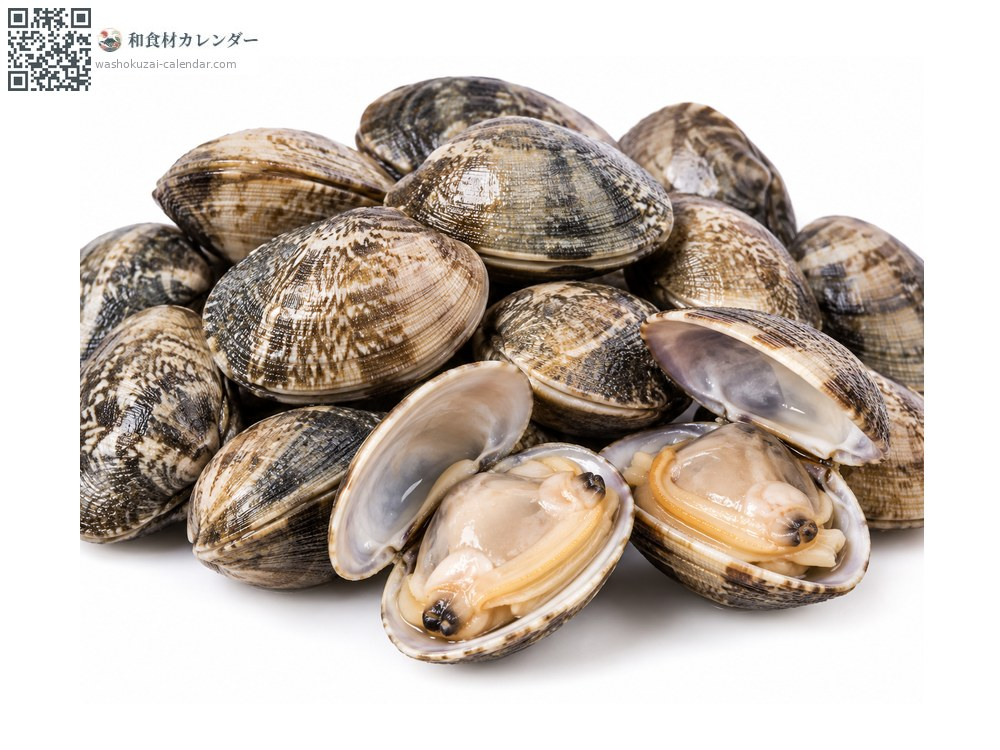
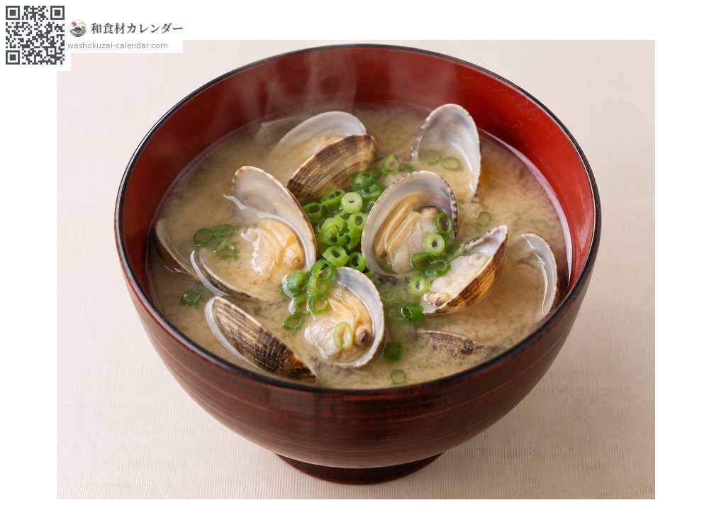
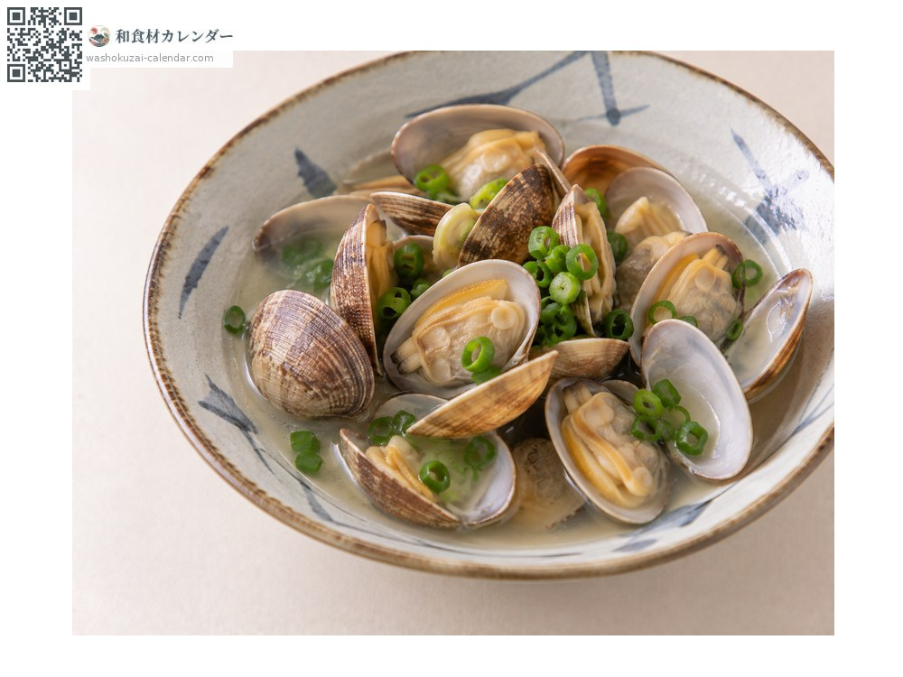
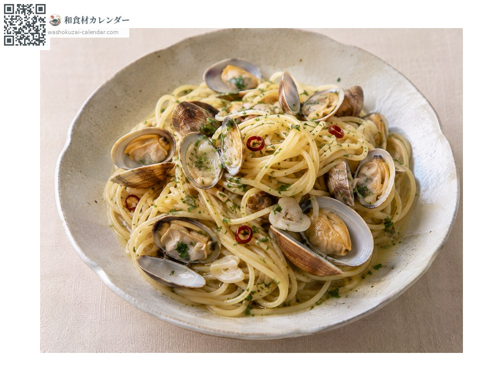
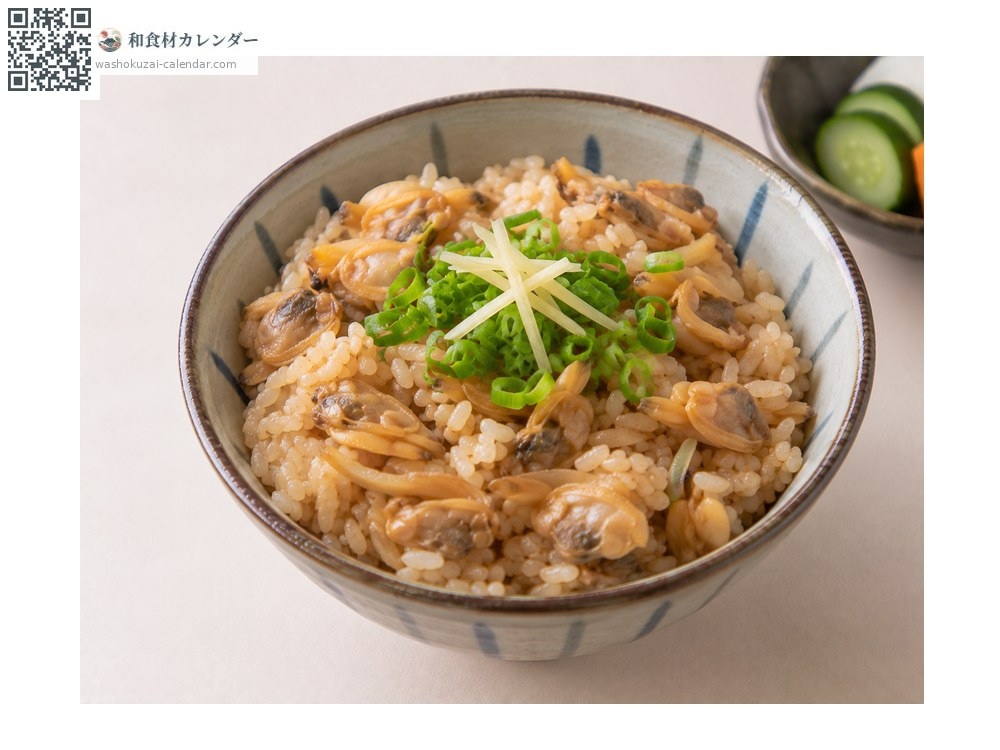

魚介
アサリ
あさり
別名・別表記浅蜊、asari
旬は2月・3月・4月

旬の時期
1月
2月
3月
4月
5月
6月
7月
8月
9月
10月
11月
12月
旬出回り
調理法

味噌汁
定番。出汁がよく出る。

酒蒸し
酒とバターで。

ボンゴレ
パスタに。にんにくと唐辛子で。

深川飯
味噌で煮て飯にかける。江戸の郷土料理。
選び方
殻が閉じているか、触るとすぐ閉じるもの。模様がはっきりしているもの。
保存方法
海水程度の塩水(3%)で砂抜きしてから調理。真水では死んでしまう。冷凍も可能。
主な産地
豆知識
砂抜きは塩水で行う。真水を使うと貝が弱るため、必ず塩を溶かした水を使う。